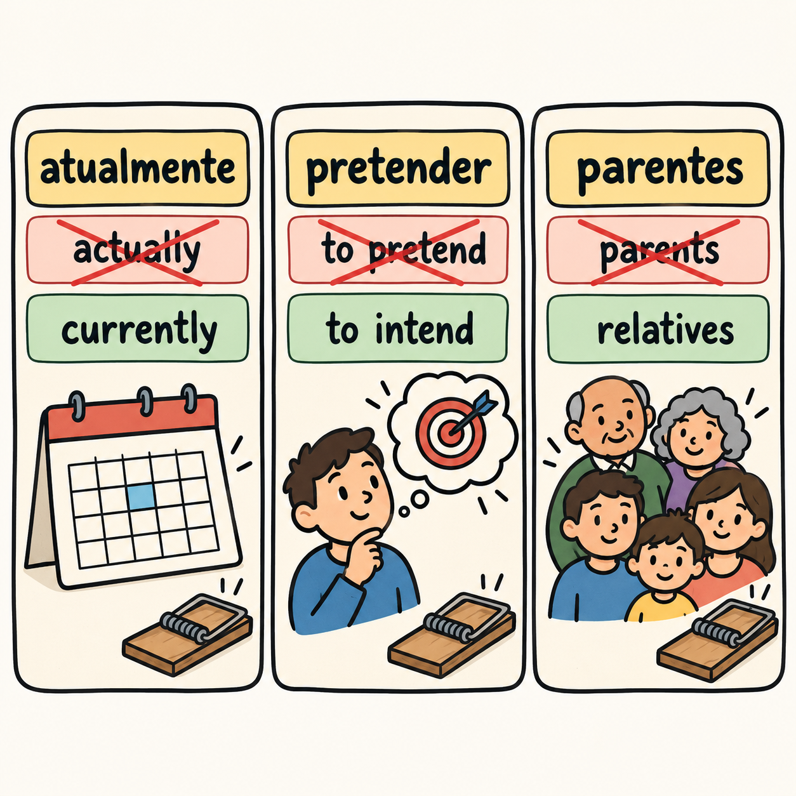

Chapter 1 gave you a map and a warning: the learned layers of English and Portuguese overlap, and the everyday cores do not. This chapter turns that overlap into a machine with two parts. The engine converts English words into Portuguese at speed, using the spelling patterns at the ends of words. The brake stops you where the pattern lies, in the look-alikes that carry a different meaning. Run the engine without the brake and you will confidently say the wrong word. Run the brake without the engine and you will learn every word from zero when you did not have to. This chapter builds both parts and ends with a short daily routine that runs them together.
A large share of the Portuguese words you meet can be guessed from their English cousins, because both languages carry a learned vocabulary built from Latin and reinforced by French. The guess runs through suffixes, the endings of words. Those correspondences are tendencies, not rules [F11] [F12]. Treat each one as a strong guess that you verify, never as a law the language must obey.
One note before the table. Every example below is an author's illustration written for this book, not a sourced quotation. Say each word out loud as you convert it.
| English ending | Portuguese ending | Author's illustrations |
|---|---|---|
| ph | f | philosophy -> filosofia, photo -> foto [F12] |
| -ize | -izar | organize -> organizar, memorize -> memorizar [F12] |
| -fy | -ficar | justify -> justificar, specify -> especificar [F12] |
| -age | -agem | message -> mensagem, courage -> coragem [F12] |
| -tion | -ção | nation -> nação, information -> informação [F11] |
| -ous | -oso | nervous -> nervoso, curious -> curioso [F11] |
| -ly | -mente | normally -> normalmente, absolutely -> absolutamente [F11] |
| -vel in the plural | -veis | possível -> possíveis, incrível -> incríveis [F11] |
Each line is a shortcut for dozens of words, and the -tion line alone covers much of the formal vocabulary you will read. The plural line is the one learners miss: the singular ends in -vel and the plural in -veis [F11], so "possível" becomes "possíveis". Read the arrows left to right only. The conversion runs from English to Portuguese, and the reverse direction is not guaranteed.
One exception deserves to be memorized on day one. English "difference" becomes Portuguese "diferença" [F11], with a cedilla, and not "diferência". The pattern suggests one spelling and the word takes another, so learn this single item now and save yourself the correction later.
And here is the warning that makes this chapter necessary: the engine regularly hands you a word that is not the word you want. "Realize" converts tidily to "realizar", and "realizar" is in the brake list below. The engine gives you the form; the brake checks the meaning.
A false friend is a Portuguese word that looks like an English word and is not that word. The list below is the set to fix in memory first: each item is frequent, each is a plausible mistake for an English speaker, and each will be understood literally when you make it.
| Portuguese | Respelling | What it actually means | The English trap |
|---|---|---|---|
| pretender | preh-ten-DEHR | to intend, to mean to [F39] | English "to pretend", which is "fingir" |
| puxar | poo-SHAHR | to pull [F40] | English "to push", which is "empurrar" |
| assistir | ah-sees-TEER | to watch or witness something, as in "assistir a um filme", and to assist in medical and formal contexts [F41] | English "to assist" as the everyday sense |
| livraria | lee-vrah-REE-ah | a bookshop [F42] | English "library", which is "biblioteca" |
| atualmente | ah-too-ahl-MEN-chee | at present, currently [F43] | English "actually", which is "na verdade" |
| eventualmente | eh-ven-too-ahl-MEN-chee | occasionally [F44] | English "eventually", which is "por fim" |
| realizar | hee-ah-lee-ZAHR | to carry out, to bring about [F45] | English "to realize", which is "perceber" or "dar-se conta" [F45] |
| parentes | pah-REN-chees | relatives [F46] | English "parents", which is "pais" [F46] |
| oficina | oh-fee-SEE-nah | a workshop or a garage [F12] | English "office", which is "escritório" |
| particular | pahr-tee-koo-LAHR | private, as in "escola particular" [F12] | English "particular", meaning specific |
Three notes on the table. First, two rows show a displaced sense rather than a missing one. "Assistir" keeps an assisting sense in medical and formal contexts [F41], while its everyday sense is watching or witnessing something. "Realizar" is the regular conversion of "realize", and it means to carry out or bring something about [F45]; to realize something in the sense of noticing it is "perceber" or "dar-se conta" [F45].
Second, some rows are couples, and you should learn the couple. With "livraria" the word you expected is not simply absent, it is another Portuguese word, "biblioteca". With "parentes" the word you expected is "pais" [F46]. Reach for the wrong member of the couple and your sentence is still fluent and still wrong.
Third, learn each row as a phrase, not as a bare card. "Ela pretende viajar em julho" ties "pretender" to intention, and "Vou assistir a esse filme" ties "assistir" to watching. These phrases are author's illustrations, so check the ones you adopt in a dictionary before you reuse them.

One published list collects 22 Portuguese-English false cognates [F47]. Use a list like that as a checking tool while you read. As an author's illustration, with no source claim attached to the glosses, here are a few well-known pairs: "jornal" (a newspaper, not an academic journal), "data" (a date, not data), "taxa" (a rate or a fee, not a tax), "êxito" (success, not an exit), "resumir" (to summarize, not to resume), "sensível" (sensitive, not sensible), "aluno" (a student, not an alumnus) and "recordar" (to remember, not to record).
Beyond that, here is an author's suggestion only, with no source claim and no figures attached: treat "esquisito", "educado", "costume", "compromisso", "fábrica" and "colégio" as candidates worth checking in a dictionary before you rely on them. They are pending dictionary review, and nothing in this book vouches for their meanings.
Build your collection in the order of frequency, not in the order of exoticism. A study of reading comprehension found the relation between the share of a text's words you know and how much of it you understand to be approximately linear, with no magic threshold [F53]. Vocabulary is a continuous gain: every useful word makes the next piece of Portuguese more transparent. That is also why this book sets no numeric target for vocabulary. The gain does not arrive at a magic number [F53], so counting words is a poor use of the attention you could spend on using them. Learn the frequent words you actually need first, and let the rare ones arrive when they arrive.
An unknown word makes you slow down and look it up. A false friend does not: you sail past it with the wrong meaning, and that meaning then attaches itself to whatever you are reading or saying. The asymmetry has been measured. In a study of false cognates in translation, false cognates were processed more slowly and less accurately, and they showed no repetition priming [F38]. Keep the direction of that finding in view: it follows Brazilian learners of English translating from Portuguese into English, so it is the reverse direction from yours [F38]. What transfers is the mechanism rather than a tested result for your profile: a look-alike carrying the wrong meaning is not merely unhelpful, it actively interferes.
So where does the help come from? A study of first contact with English found that cognate facilitation comes from spelling similarity and meaning similarity, and not from similarity in sound [F13]. Once more the reverse direction: the participants were Brazilians meeting English, not English speakers meeting Portuguese [F13]. The practical reading still holds: trust the written form and the meaning link, and never assume the pronunciation travels with them. "Information" and "informação" are cousins on the page, and the stress and the vowels still need their own work.
Research on vocabulary learning also gives you a placement rule. Cognates and concrete words are learned better and forgotten more slowly [F14]. So when you convert a word, do not stop at the pair. Anchor it in something concrete: an object in the room, a picture, a sentence about your own day. The rare, abstract, spelling-only pair is the one you will lose first.
Formulaic sequences are read more quickly than ordinary combinations of the same words, by native speakers and by non-native speakers alike [F51]. So learn whole phrases as single items, with their sound and their use, instead of assembling them from parts each time you need them. Four chunks will repay you in your first week of conversation. The respellings are author's illustrations.
Store each chunk as one card with the phrase on the front and the situation on the back. The point of buying them as blocks is that conversation gives you no time to build them piece by piece.
The routine the author suggests is short by design, so that you can run it every day. Ten minutes, three steps, in this order.
Step one, convert. Take the English words you met during the day and run them through the pattern table. Write the Portuguese form you predict, then check it. The prediction is the work; the check is the correction.
Step two, read aloud. Say each new word with its respelling, putting the stress where the capitals put it, and say the phrase you placed it in. Conversion without sound leaves you with a written word you cannot use in conversation.
Step three, self-test the meaning in full sentences. Cover the meaning column, read the Portuguese word, say what it means, then produce one full sentence that uses it. Full sentences matter, because a word you hold only as a pair is a word you cannot yet deploy.
Why build it this way rather than simply reading and listening more? Incidental exposure on its own yields little, according to a meta-analysis of incidental second-language vocabulary learning [F55]. Vocabulary sticks when the task carries need, search and evaluation, and retention depends on those three [F56]. The routine manufactures them on purpose: you need the word for the sentence you want, you search for its form and its meaning, and you evaluate whether the meaning you chose fits. Ten minutes of that beats a longer session of reading past words you half recognize.
Your Spanish is the fastest possible entry into Portuguese vocabulary and the richest source of false friends in this book. Three traps from this chapter, then the drill.
Why a box like this appears in every chapter: English-Spanish bilinguals depend on Spanish when they learn Portuguese, whatever the order in which they acquired their languages [F62]. That dependence is not a defect. It is simply the material you have to manage. The sound side matters here too: English-Spanish bilinguals produce voiced stops as Spanish-style approximants, the soft b, d and g of Spanish [F36], while Portuguese wants full stops with a complete closure. So run the drill. Say each author's illustration slowly and make the consonant hard rather than soft.
Say each word, put it in a short phrase of your own, then say it again at conversational speed without letting the consonant soften.
Retrieving what you just read is what makes it stick: a meta-analysis of the testing effect compares testing with restudy [F94]. Answer from memory first, then check.
As the author's suggestion, here is a simple calendar for this chapter. Read it once today, then come back on these days:
On each return, run the self-test from memory first, then reread only the parts you missed. These four review points are the author's adaptation of the interval idea in a spacing study [F90], which measured a single gap between two study sessions. That source did not test this calendar, and the four points are a suggestion, not a result reported by that study. Move the days around your own week if you need to. The habit of returning and retrieving matters more than the exact date. Later, Chapter 9 turns the traps of this book into a small error deck you can run with the same habit.